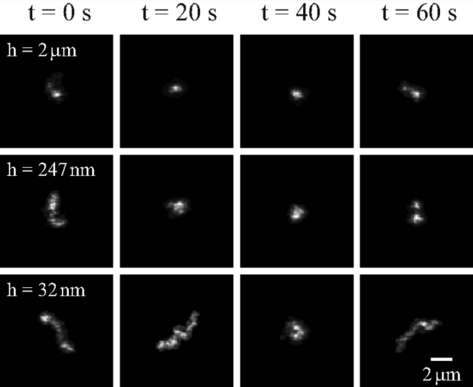
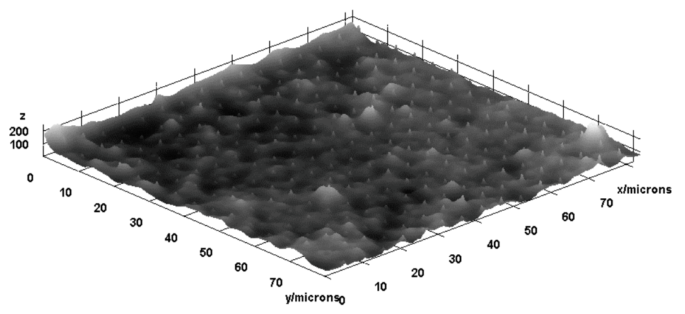
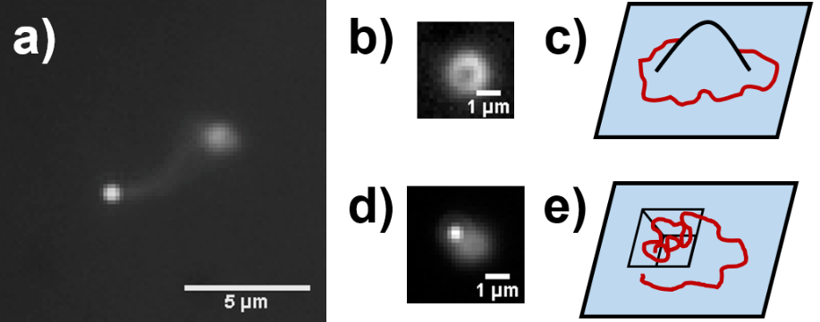
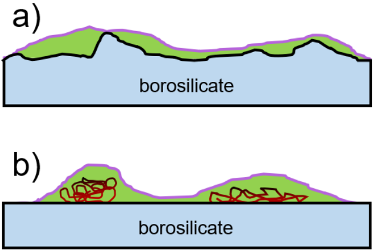
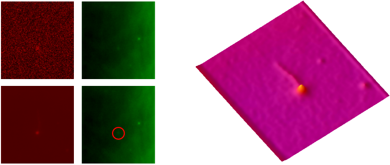
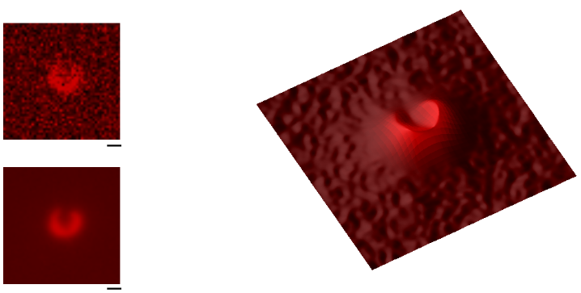

Diffusion of DNA trapped in a nanofluidic cavity
My project for PHYS 659
group lunch 20 February 2019
Background
why DNA
- Confined DNA as polymers (long chain molecules)
- Study free energy of confinement
The tool box
- Fluidic devices for trapping
- Fluorescence Microscopy
- DNA self excludes (no overlap)
- Will conform to nano features 
Free energy and confinement
The Device


Smoothness of device...
We can see nanoscale pits with flourescence mapping.
We could extract 3D structure simply using the flouresence of buffer!
DNA affected by roughness, can't decouple.
What we see vs. what we want.
See DNA, but clearly see roughness.
Again, see background roughness.
- Take device with known roughness
- Functionalize with molecule
Smoothness promote trapping?
Data
Background DNA

Trapping